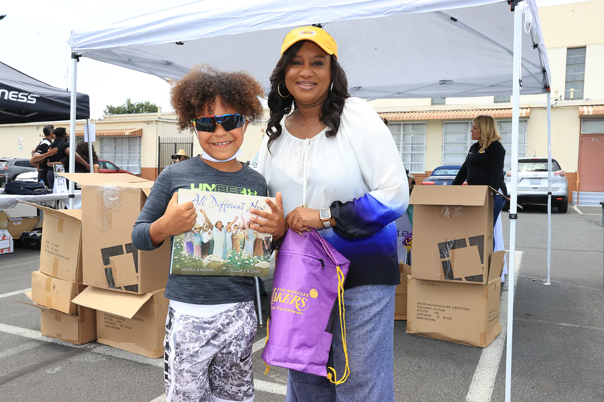
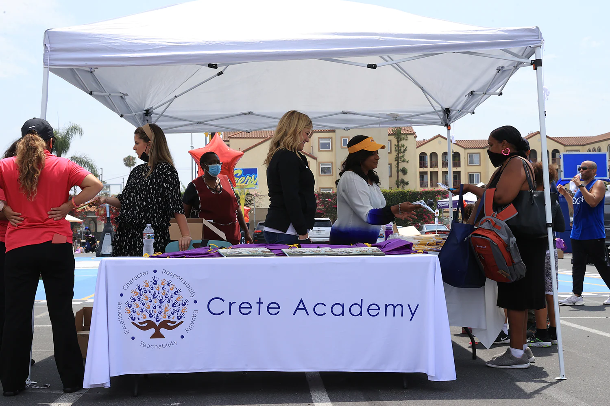
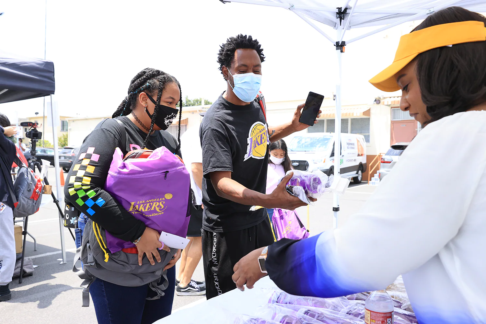
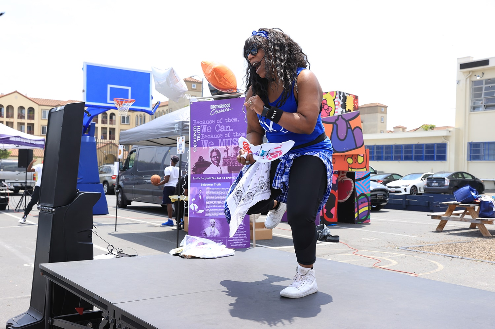
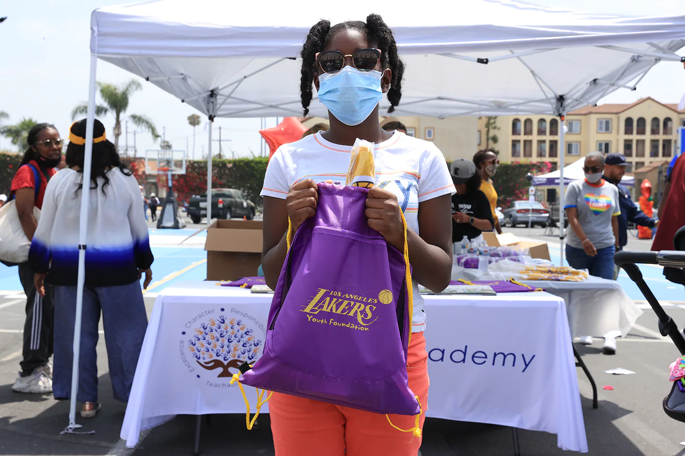
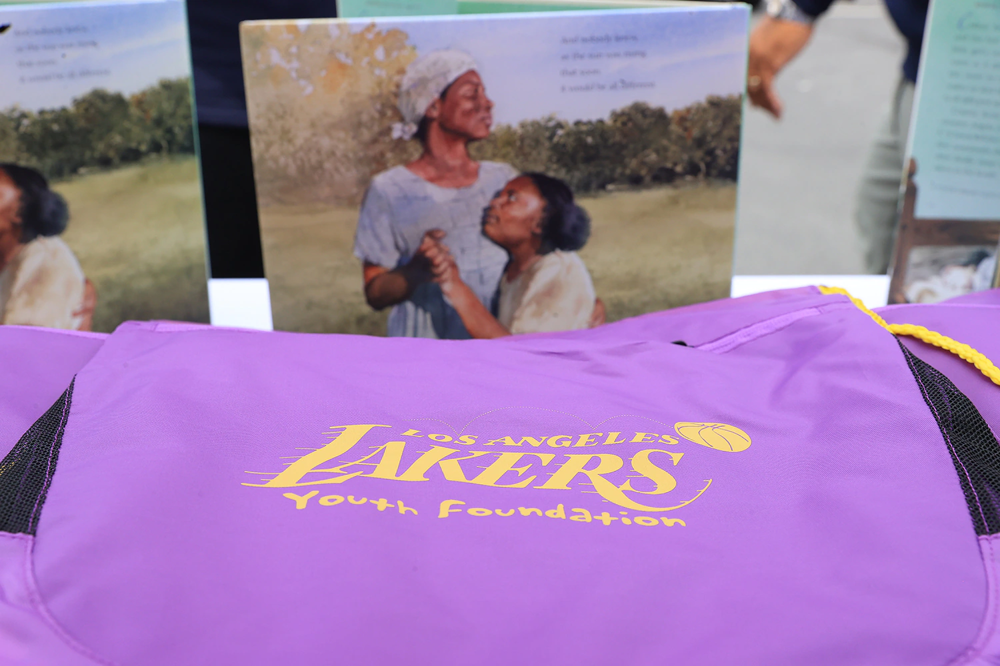

Contributions are a powerful way to improve our neighborhoods. The Lakers are happy to donate to their nonprofit with the quarterly grants and YOU scholarships.
Additionally, California-based 501 (c) (3) nonprofit organizations may request souvenir donations for fundraising events or group ticket donations.
We also appreciate any amount of donation you can make. .

Explore the areas the Lakers and Lakers Youth Foundation support. Learn more about the initiatives of each operation and what our efforts help to achieve.
     